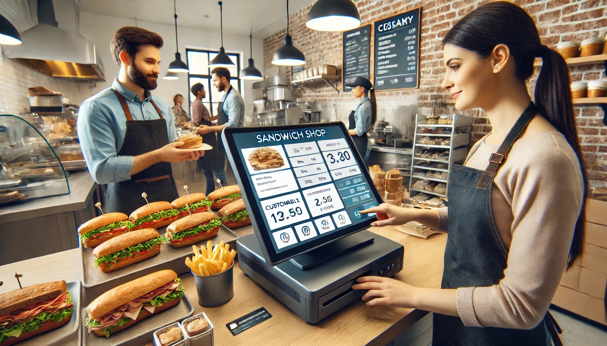
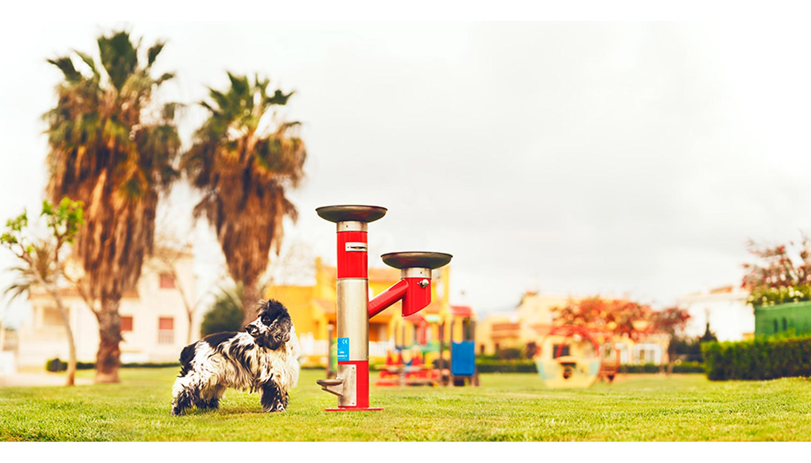
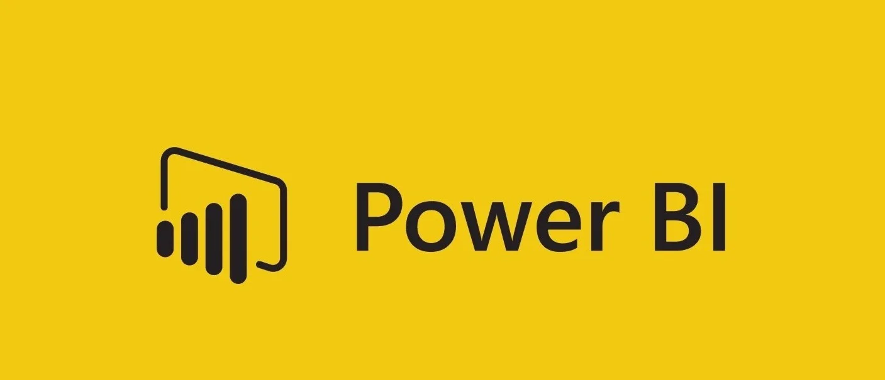

Proyectos
-
Modelo de predicción de churn de clientes
Desarrollo de un modelo predictivo para identificar clientes con riesgo de abandono utilizando Python y scikit-learn. Se realizó análisis exploratorio, limpieza de datos, feature engineering y entrenamiento de un modelo de clasificación (Logistic Regression).
-
Análisis del mercado automovilístico español
Proyecto de análisis del mercado automovilístico en España utilizando datos históricos de matriculaciones de la DGT. El análisis permite visualizar tendencias del mercado, evolución de combustibles y crecimiento de vehículos electrificados.
-
Dashboard de puntuación de encuestas de satisfacción al cliente en Excel

Este proyecto presenta un dashboard desarrollado en Excel, que permite visualizar el nivel de satisfacción de los clientes de distintas franquicias de venta de sándwiches, utilizando diversos criterios de evaluación.
-
Limpieza de base de datos en SQL

En este proyecto usamos SQL para transformar una base de datos pública del estado donde encontramos información de las fuentes de agua habilitadas para el uso de mascotas en la ciudad de Madrid.
-
Exploración de datos en SQL
En este proyecto usamos SQL para explorar datos de juegos de mesa de la página Board Game Geek.
-
Power BI Dashboards

Dashboard de proyecto sobre juegos de mesa